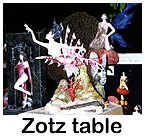
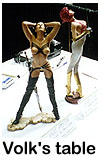
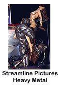
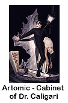
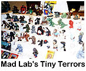
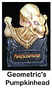
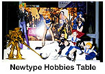

Review by:
Larry Brackney (zeiram@mail.hsonline.net)
Photos by:
Jerry Shaw (jshaw@primenet.com)
Jay Adan (jayadan@kbt.net)
Denis Bohm (denis_bohm@fireflydesign.com)
Layout by:
Art Antiporda (pitt@nexus.interealm.com)
 he Mad Model Party is often billed
as one of the premier garage kit shows in the world. Not only does it draw
folks from the LA area involved in special effects, but vendors and hobbyists
from Japan also make the trek to attend. The third annual model party was
no exception with a weekend attendance of over 2000 people!
he Mad Model Party is often billed
as one of the premier garage kit shows in the world. Not only does it draw
folks from the LA area involved in special effects, but vendors and hobbyists
from Japan also make the trek to attend. The third annual model party was
no exception with a weekend attendance of over 2000 people!
While horror illustrator Bernie Wrightson was the only official guest on the bill, it was easy to catch a glimpse of "industry staples" in the crowd. Bob Burns, Glenn Danzig, Steve Wang, and most of the top sculptors and kit producers in the US attended at some point during the weekend. A huge number of vendors from the US and abroad were also on hand to debut their newest kits. Here's a brief run down of some of the vendor highlights in no particular order. 
Zotz made (I believe) their American debut at MMP3. Voluptuous Tears, a vampire woman, and others were all available. They were also offering a sneak peak at their upcoming 1:6 kit of Anthony Hopkins as Dr. Van Helsing clutching the severed heads of Drakul's maidens. Zotz is also working on a 1:6 kit of Lucy holding a small baby. Van Helsing looked great, and these kits should complement the Horizon 1:6 kits nicely. All in all, a very nice debut from a company with a promising future!
John Wright of Vision Models set up shop right next to Zotz. John's terrific Bruce Lee and Morphess kits were up for grabs along w/ a weird looking pig monster. John was also showing off in progress photos of his Barb Wire sculpture which will be produced by Monsters in Motion. The likeness looked spot on and features Barb in a standing pose taking aim w/ a pistol. 
Take one look at a table stacked full of Soryama, Devilman, and Silene kits and you KNOW you've arrived at the Volks booth! No new kits here, but you could get a first hand look at some of David Fisher's Soryama build ups as well as some VERY elusive Silene kits.
Steve and Melinda from Cellar Cast made the trip down to MMP, bringing with them Steve's latest, an original sculpture called "Demoness." This one was fresh out of the molds, and the prototype paint job was completed the night before the show! This beautiful kit sold out within hours of the show opening, and featured a nude female demon w/ rams horns and a tail. The figure stands in the middle of a flaming pyre cast in amber resin.
Kit Kraft's booth was jammed full of kits from a variety of producers.
Some of McVey's kits were available along with some amazing dinosaur trophy
heads! Kit Kraft was also selling Polytranspar paints and other assorted
supplies. I had to pick some more colors up that I'd missed during the
previous day's trip to Kit Kraft's store in Studio City!

Bowen Designs was supporting their recently released Decapitator kits along with a nice selection of original busts. Upcoming pieces of note include an exquisite Cthulhu fetish, a cool Hellboy bust, and a bust entitled "War." Randy and Rocky were also selling a Death Dealer bronze. Sometimes this hobby depresses me...
Danny Soracco was showing off a nice display of all the new Dimensional Design pieces. The 1:3 Karloff busts looked terrific as did the prefinished Bowen Werewolf pieces. As always, DD is continuing to produce interesting kits of obscure characters, like Fu Manchu and Lovecraft's "Pickman's Model."
Streamline Pictures featured a display of their kits including: Goro, Heavy Metal, and some Robot Carnival kits. An interesting kit of a biomechanical woman w/ metal wings was debuted at the show. Streamline was also showing a sculpture of an upcoming Elfquest kit. 
Creature Features had a large display of kits by Tony McVey and other independent kit producers. Two of the featured kits at their booth were McVey's "Wings" flying monkey kit and a large demonic creature called the Netherlord. McVey's busts were also quite popular, particularly a demon bust painted by Gremlin's own Jay Adan. As an aside, Creature Features was throwing a pre-show party at their gallery the night before the show. Folks visiting the Burbank area should check out their large collection of build ups and kits!
Horizon's elaborate display showcased their collection of solid model kits, bases, and prepainted sculptures. Windslasher was the most recent new release, but for the most part, as far as I could tell, Horizon was trying to put their business strategy and vinyl rerelease schedule into perspective. Here's hoping they quickly get all their ducks in a row and start releasing new vinyl kits again soon!
Next to the Horizon booth was proof positive that they'll let anyone into these shows - the Gremlins booth! Denis was on hand to provide demonstrations of the best darned garage kit webzine on the planet! Vendors and modelers alike were interested in gremlins. The booth also served as a meeting place and general slumming area for all of the gremlins infesting the show. :) 
M1 was also present w/ a few of their kits from Japan. They had some neat Nightmare Before Christmas pieces, a very cool kit of Kyle Maclachlan as Paul Atreides from Dune, and some Gamera kits from the upcoming film.
The distinctive Artomic booth was also worth stopping at. In addition to being able to see the ill-fated Dark Horse Bela Lugosi kit, visitors could also take a look at Thomas Kuntz's amazing line of kits featuring obscure B/W and silent era film stars. Thomas debuted his new Cabinet of Dr. Caligari kit which features the murderous Cesare making off with an unconcious woman. This piece was really amazing to look at, and IMO was one of the best kits at the show. Kits of Vampira, Max Schreck as Nosferatu, a Vlad the Impaler bust, and original sculptures entitled "Eve" and "Brat Beater" were available.
Not all of the vendors at MMP were selling garage kits. A company called "Bone Clones" was selling reproductions of skulls taken from everything from a gila monster to a wildcat to a hyacinth macaw. Really neat stuff! In a similar vein, Wolf's Head Productions was selling original bronze sculptures and busts as well as bronze face reproductions of famous horror actors. 
Mad Lab Models was showing off their Tiny Terrors Line as usual. Gremlin's Art Antiporda took a great deal of interest in their line of inexpensive superdeforms and accessories, but ultimately dropped most of his cash at the Verotik booth. Verotik was showing their kits based on Dalkiel, G.O.T.H. and Satanika as well as some WONDERFUL Devilman/Silene SDs. Unfortunately, the SDs were not available for purchase. :( Sugita's Genocyber and Bloodhammer kits were also available at the Verotik table.
Monsters in Motion had a large selection of original kits and products
from other vendors. Their line of Harryhausen figures continues to grow,
as does their line of classic horror pieces. The Dr. Patorius kit was
debuted at the show along w/ a terrific Frankenstein kit featuring the
monster on the operating table. These two pieces should complement the
Colin Clive kit nicely. MiM was also showing off Jeff Yagher's Peter
Cushing as Van Helsing kit. The interlocking Christopher Lee kit was not
shown, and is only available through mailorder as a limited edition
casting.

Kotobukiya was showing off their upcoming rereleases of the Elric and Nightmare kits. Both of these kits will be available later this summer and will be cast in soft vinyl. The new Elric kit is designed to be wall mounted rather than with the original skull base. The Nightmare kit is unchanged and features the same sword wielding fantasy figure. (Nightmare looks quite a bit like Vampire Hunter D, but is taken from the Legend of Guin Saga manga.) Perhaps my greatest disappointment at the show was the Kotobukiya did not have these beautiful sculptures available for purchase!
Skyhook models had several of their space vehicle kits on display along w/ their new line of Doom-inspired models. Resin kits of the Cacodemon, Cyberdemon, Cyberspider, and "Sarge" (what I affectionately refer to as "pigs" in the game) were available. The kits are roughly 1:12 - 1:8 scale and fairly simply detailed. I mentioned to Skyhook that an Imp w/ optional "shotgun blast recoil head" would be cool. :)
Miniations' line of 1:6 kits continues to grow. The Alien/Vasquez
"struggle" kit was available as was the Sarah Conner kit and some of their
older pieces. They also debuted a REALLY nice kit of Gally from Gunnm or
Battle Angel Alita as it's known in the US. The kit features Alita in her
Motorball outfit from the later manga volumes. Miniations' next kit will
also be from Battle Angel.

Now we come to my favorite table: Fewture Models! Only a small selection of Fewtures line of kits was available at their booth. Nina Gillman suit kits proved popular among Gremlins in attendance, and Nirasawa was delighted to sign kit boxes. It was a true pleasure to speak briefly w/ Nirasawa, and he was all to happy to execute a Nina sketch for me in my copy of Creature Core. In addition, Fewture was showing off their upcoming "Guillotina" kit, an really cool femme fatale sculpted by Oniki. They also had photos of Takeya's next kit, "The Surgery Addict." I won't say any more about this piece aside from the fact that Terry Fitton's decided that MiM WON'T be stocking it. :o
Inteleg was showing their upcoming 1:4 Iria kit as well as a planned pre-painted Iria/Zeiram 2 final battle scene. I was quite disappointed to find that this would NOT be available as a kit. Inteleg was selling their prepainted Crow sculptures as well as the vinyl Cthulhu and Crow kits. They also debuted a cool resin base for Cthulhu sculpted by Mike Wowchuk. The base features a large pentagram-styled glyph, and would probably work w/ lots of kits. 
Across the way, George Stephenson and the rest of the GEOmetric gang were showing off a new resin/metal sculpture called "Bad Seed." It features a female pumpkinhead-inspired creature bursting out of the ground. As at W'fest, they were also selling their new 1:4 busts and vinyl Kong kit. We spoke w/ George briefly about their upcoming Aliens and Predators kits. The figure kits should be produced in vinyl w/ resin bases available seperately. Resin character busts will also be available. The first of these pieces may be available before the Fall Chiller show.
G-Force was showing off a small selection from their line of kits, including a bust of Roy Batty from Blade Runner, a very cool kit of David Bowie as the Goblin King, and several Predators.
Another new company, V.E.C. (Viscious Effects Creations), was showing some nice kits of Hoggle from Labyrinth and the Chamberlain from the Dark Crystal. Both of these films have been seriously overlooked by garage kit producers IMO, and I was delighted to see them at the show. 
Hogan's Bones was on hand w/ their "Too Die For" kit, a really nice 1:6 female predator. They were also showing their prototype for MiM's upcoming Sabretooth cat from "Eye of the Tiger," a fantasy character riding on the back of a monsterous steed, and a kit of Sinbad dueling w/ a skeleton on a spiral staircase. The prototype for the Jason and the Argonaut's skeleton battle scene featured in the W'fest contest article was also present. Hogan's Bones is currently looking for someone to produce this wonderful kit for them.
That's an incomplete summary of some of the booths at MMP3. There were also several stores and shops represented at booths that were selling miscellaneous kits. Most of these vendors were well stocked w/ styrene mecha, anime, and kaiju kits. Lots of Evangelion and Street Fighter kits were floating around along w/ a ton of kits and toys from Gojira vs. Destroyah.
The MMP3 "Academy Awards" contest was really a mixed bag IMO. I was surprised to note that there were far fewer entries at MMP than at W'fest. I was also shocked at the quality (or rather, lack thereof) of some of the entries! I honestly felt that some of the kits in the beginner's class surpassed some of the professional class entries!
Those gripes aside, there WERE some amazing kits entered. It was little surprise to anyone, which kit swept the people's choice and professional categories: John Tucky's superlative Bride of Frankenstein diorama. This 4' tall diorama featured the entire laboratory scene w/ Drs. Frankenstein and Patorius working on the bride while the "monster" readies to hoist her up to the roof top during a storm. All of the lab benches were packed w/ detailed equipment, and the entire diorama was rigged w/ lights and sound effects. Sadly, I was never able to see the diorama in full swing.
Other noteworthy kits were: a wonderful Boltstein complete w/ glass eye, a terrific 1:5 Vision Predator w/ water sculpted in clear resin, a nice reworking of Kaiyodo's Zeiram 1, a neat diorama featuring the Guyver and a Zoanid ripping a tree out of the ground. Of course there were many more great build ups, but those were just a few that jumped out and grabbed my throat.
Perhaps one of the best things about MMP3 was getting to meet many of
the Gremlins that contribute to these web pages and populate the mailing
list! Leann and I had a great time hanging out w/ Dino Dan, Denis, Art,
and John (MirageD) Hoffman. Late night garage kit conversations, sight
seeing, and just hanging out were great ways to spend time together. It
was also nice meeting Penny, Anthony, Jay, Fred, and some other folks
during the coarse of the weekend. Hopefully next year (yup... NEXT YEAR!)
we'll be able to collect a larger group of people w/ more organized
activities! Dinner at Todai, and the first round of Sake's on me! :)
There are so many great pictures from the show that we put together a Photo Index with links to all the pictures. For those of you with Java enabled web browsers we created a Slide Show.
Note: We did our best to identify the kits in the pictures, but please let us know if we made any mistakes so we can correct them. Also, if we missed getting a picture of your kit please send us one so we can add it to this review. Thanks!
The Gremlins in the Garage webzine is a production of Firefly Design. If you have any questions or comments please get in touch.
Copyright © 1994-1997 Firefly Design.
{kind=link}
{kind=link}
{kind=link}
{kind=link}
{kind=link}
{kind=link}
{kind=link}
{kind=link}